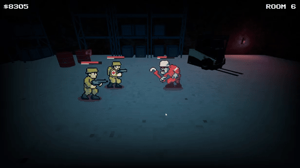
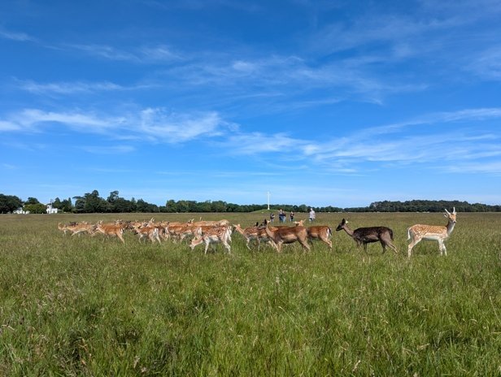
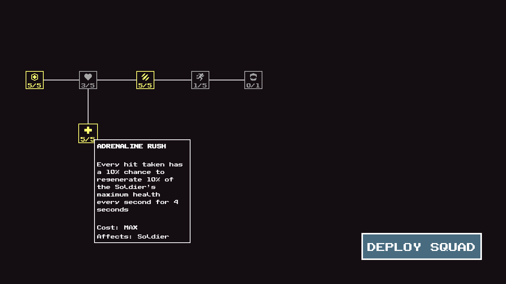

The Joys of Using Asset Packs
June 22, 2026
I don't know, man. There's just something sweet about saving time these days.
Back in my younger, know-it-all, tech-loving, time-wasting days, I would have happily spent hours digging into shaders, gradients, and all sorts of visual trickery just to implement a scene transition for my latest game.

Not when I could be spending that time on the couch with my wife catching up on a good TV show, or out enjoying a sunny Father's Day with my family. We don't get much sun here in Ireland (shocker) so when it does show up being outdoors is a no brainer.

When I first started my career as a software developer I genuinely believed that the more technology you knew, the more employable you became. I was proud of knowing multiple programming languages and always had room in my brain for one more.
As we all know, things have changed. These days anyone can generate code. Whether it's good code is another matter, but the barrier to entry is certainly lower than it has ever been. So "learning another language" no longer feels like the career advantage it once did. But I digress.
I love making games as much as the next guy, but some things are fun and some things are not. Designing systems? Love it. Writting shaders? I just can't be arsed.
My younger self would probably cringe at the idea of 49 year old me buying an asset to handle scene transitions. My older self couldn't care less.
I have more interesting things to spend my time on, like designing skill tree nodes and (shamelessly) stealing good ideas from my favourite games.

The asset in question is Godot Transitions by Binbun. Cheap, took me about ten minutes to learn, and another ten minutes to integrate. What's not to love?
One thing I've found exciting over the last few years is watching the Godot ecosystem mature. The asset library keeps getting better, and more developers are building tools that help others move faster. The older I get, the more I appreciate that.
I have games I want to make, ideas I want to explore, and not nearly enough free time to do it all. Anything that helps me spend less time on things I don't enjoy and more time on things I do? I'm all in.